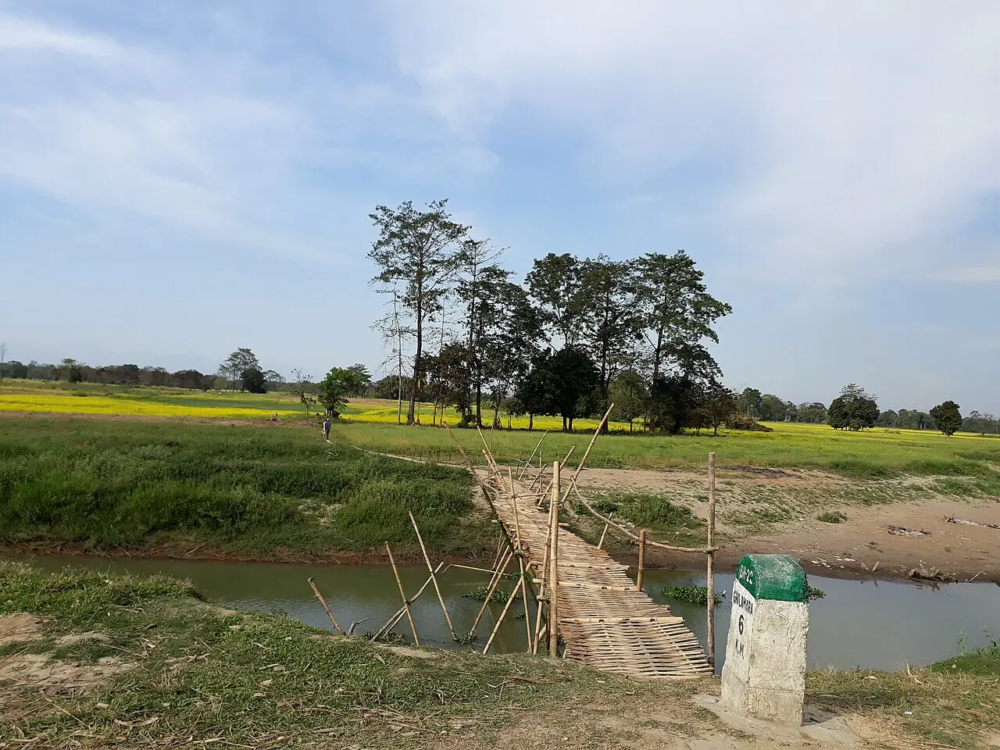

11 stories, each with its photo, the official position and its sources.

File photo · 2019 · Village fields in Lakhimpur district, Assam, in 2019. File photo of the district, not of Borbil. Photo: Joli / Wikimedia Commons, CC BY-SA 4.0 (cropped)
Land & livelihoodBorbil, Lakhimpur, Assam
Assam: 42 families' homes demolished in Lakhimpur
Officials demolished 42 families' homes in Borbil, Lakhimpur, on 17 Nov, calling it encroached tribal-belt land; four families had court stays. Residents say they paid land revenue; officials say they gave 45 days' notice.
File photo · 2009 · The entrance sign at Freedom Park, where a 2021 order confines most Bengaluru protests. Photo from 2009. Photo: Diham / Wikimedia Commons, CC BY 3.0 (cropped)
AssemblyFreedom Park, Bengaluru, Karnataka
ASHA health workers camp at Freedom Park
Thousands of ASHA health workers began an indefinite protest at Bengaluru's Freedom Park on 17 Nov, seeking ₹15,000 a month instead of ₹5,000 plus incentives. The health minister promised to raise it at Thursday's Cabinet.
File photo · 2011 · Ukhrul town, Manipur, in 2011; the ambush was on the road between Imphal and Ukhrul. File photo. Photo: Ac apam / Wikimedia Commons, CC BY-SA 3.0 (cropped)
AssemblyImphal, Manipur
Hundreds rally in Imphal after highway ambush
Indigenous groups rallied at Imphal's Mao Market over the 13 Nov ambush on the Imphal–Ukhrul road that killed four civilians. The government has invited them for talks; families have not claimed the bodies.
File photo · 2005 · Chawri Bazar road, one of Old Delhi's wholesale markets near Ramlila Ground, in 2005. File photo. Photo: Finck Roderick / Wikimedia Commons, CC BY 3.0 (resized)
AssemblyNew Delhi
Supreme Court hears traders' plea against Delhi protests
The Supreme Court sought responses from protest organisers and the Union and Delhi governments on traders' plea that October's protests at Ramlila Ground and Connaught Place hurt business. It hears the case on 27 Nov.
Ruling on a Nigerian man's bail, the Delhi High Court said foreigners accused of visa overstay can't be held in detention centres as a bail condition. Detention stays an executive power. State's arguments unreported.
Supreme Court: highway demolitions need due process
The Supreme Court said its 13 April highway-encroachment order cannot justify demolishing disputed structures without the law's notice and hearing. Authorities say the structures lie on highway land; owners may approach High Courts.
Israeli tanks pushed past the Yellow Line near Nuseirat and Bureij on 18 Nov as families fled. Gaza's health ministry counts 1,658 killed since the ceasefire; Israel's army says it is removing a Hamas threat.
Amnesty says nine RSF drone strikes on El Obeid in June–August killed 37 civilians, hitting homes, fuel stations and the market with no military target nearby. The RSF denies it and blames the army.
UNICEF: 64 children killed in Yemen since September
UNICEF says at least 64 children have been killed and 64 injured since Houthi–government fighting intensified on 3 Sept, much of it around Taiz and Lahj. No response from the warring parties was reported.
Police fired tear gas, sound grenades and rubber bullets at garment workers seeking a 30,000-taka minimum wage (now 12,500) in Savar on 18 Nov; 112 factories shut. Police say protesters blocked a highway, threw stones.
Burkina Faso opens terrorism cases against exiled critics
Burkina Faso's prosecutor opened six terrorism cases against at least 45 people and entities, including exiled journalists and activists, and sought arrest warrants abroad, HRW reports. He says the cases concern terrorism offences.